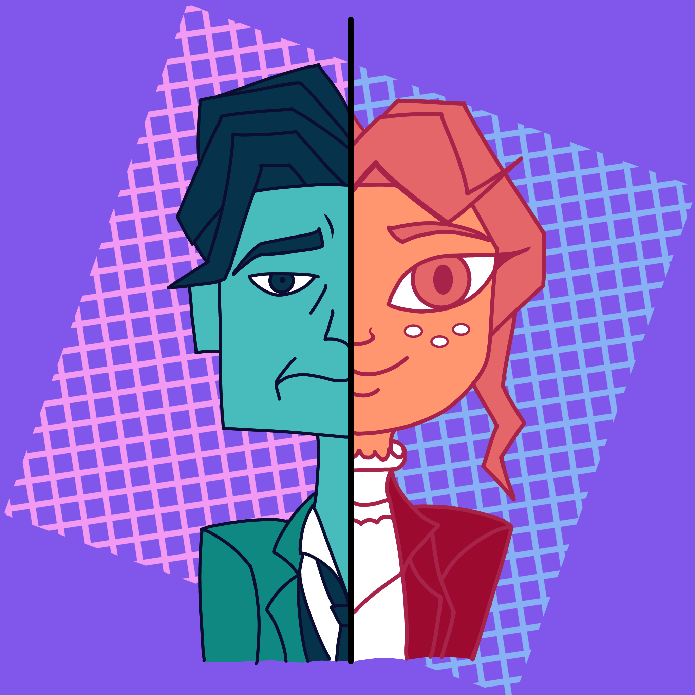

Identity V is a free-to-play asymmetrical multiplayer survival horror game, similar to Dead by Daylight but different in its own way. I've been playing IDV since March 2020. I enjoy the game's gothic/Tim Burton style and its intriguing story. The main story starts with a detective named Orpheus going into an abandoned manor to investigate a missing person case. Once in the manor, he was then locked in a room he was investigating. He then finds diaries describing games containing hunters and survivors. He realizes that this manor might be connected to his past, which he doesn't remember since losing his memories ten years ago.
 Home